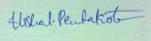

To obtain a challenging position in a dynamic organization and be an integral part of growth oriented company.
To utilize and grow my analytical, research and technical skills in Systems Administration.
Academic Qualification |
Institute/University |
Year of passing |
Percentage |
|---|---|---|---|
| B.Tech | Vignan's Institute Of Information Technology, Visakhapatnam | 2016 | 61% |
| Diploma | Govt.Polytechnic college, Anakapalli | 2013 | 84.61% |
| 10th | Sri Gouri Public School | 2010 | 79% |
I am good in certain technical abilities like
• Having good knowledge on MATLAB, Embedded systems
• C programming, HTML and CSS, Ruby on Rails, and python
• Have learned Networking through Google and Youtube
• Institute name : Embedded Wings
• Course name : Embedded systems
• Duration : Six months (15th May 2012 to 20th Nov. 2012)
• Participated in “Live Project Exhibition” held at VIIT, Duvvada on 03rd December 2014.
• Participated in workshop on “Recent Trends in Engineering Design” at VIIT, Duvvada on 10th August 2015.
• Participated in “Techno Avishkar” and submitted a project on “Accident prevention using Eye Blink sensor” at Vignan university Guntur.
1. I have won an inter school football champions trophy in my town under my captaincy.
2. I am an leader in a service organization MAA..PREMA , and conducted many service events
3. I was an coordinator for many events like
• Robohunt workshop in association with IISC Bangalore
1. I have did many projects based on my core subject as well as non-core.
2. I have done a project on embedded systems.
3. My academic project is “Arduino based GPS Locater”.
• I accept challenges and find results out of it.
• I love being productive with limited resources and
• I have sprit of accepting others excellences and inspire from them.
• I love playing sports like Cricket and Football
• Listening to music
• And even I love travelling and exploring new places.
• I often write stories.
• I’m a photographer.
Name : Vishal Pentakota
Sex : Male
Date of Birth : 10/10/1994
Father’s Name : P Mallikarjuna rao
Marital Status : Single
Nationality : Indian
I, hereby declare that the above furnished information is authentic to the best of my knowledge.
Place: Chennai
Date:

(VISHAL PENTAKOTA)